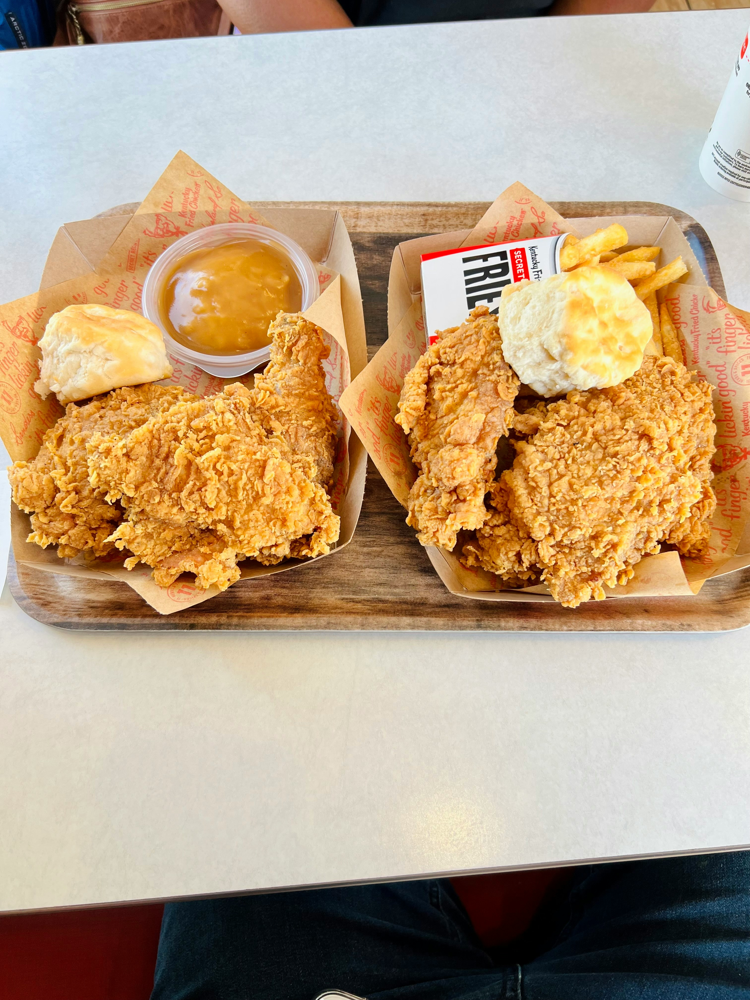

Recipe of Crispy Fried Chicken

Description
Indulge in the classic comfort of crispy fried chicken, with golden, crunchy exteriors and juicy, flavorful meat inside. This recipe is perfect for a family dinner or a casual gathering, bringing that satisfying crunch with every bite.
Ingredients:
- 1 whole chicken, cut into pieces
- 2 cups buttermilk
- 1 cup all-purpose flour
- 1 cup cornstarch
- 2 teaspoons salt
- 1 teaspoon black pepper
- 1 teaspoon paprika
- 1/2 teaspoon garlic powder
- 1/2 teaspoon onion powder
- 1/4 teaspoon cayenne pepper (optional, for a bit of heat)
- Vegetable oil, for frying
Steps:
- Marinate the Chicken
- Prepare the Coating
- Coat the Chicken
- Shred Chicken
- Heat the Oil
- Fry the Chicken
- Serve